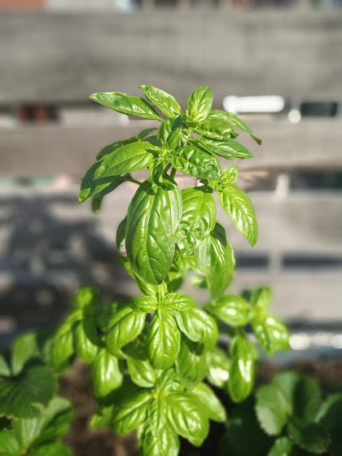
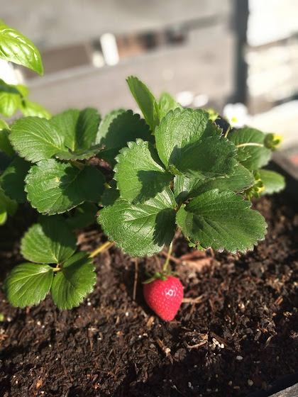

.png)
COSECHANDO ANDO
Mi Terraza

ZAPALLO DE TRONCO
Se trata de un fruto que prefiere las altas temperaturas para desarrollarse de manera óptima. Tips para incluirlo con éxito en la huerta.
El zapallito de tronco (Cucurbita maxima var. zapallito) es un cultivo de verano, tropical, muy sensible a las heladas.se consumen en estado de fruto inmaduro. Son plantas anuales, erectas, semiarbustivas, que luego de un tiempo se van haciendo rastreras. La germinación es rápida pero requiere de altas temperaturas, las óptimas son de 30°C a 35°C. El ciclo de cultivo es corto. A fin del invierno, y con protecciones temporarias tipo túnel bajo, el ciclo de plantación a cosecha puede ser de 60 días. Con altas temperaturas puede acortarse a 30 o a 45 días. Cuidados: evitar encharcamientos.

ALBAHACA
Es muy popular en la Argentina en la preparación de diversos platos de raíz italiana, y también se le atribuyen propiedades medicinales La albahaca es una de las plantas aromáticas de clima cálido, de tipo anual pero que se comporta como perenne en climas amenos. Es miembro del género tropical Ocimum, probablemente originaria de África y domesticada en India. La plantita, con temperaturas templadas, crece rápidamente con un tallito fino y anguloso, que emite hojas verdes brillantes, algunas de varios centímetros, opuestas, y a los 13 o 15 centímetros ramifica y forma un pequeño arbusto que alcanza una altura de 30 o 40 cm según las variedades.

FRUTILLAS
Se trata de un fruto que prefiere las altas temperaturas para desarrollarse de manera óptima. Tips para incluirlo con éxito en la huerta.
El zapallito de tronco (Cucurbita maxima var. zapallito) es un cultivo de verano, tropical, muy sensible a las heladas.se consumen en estado de fruto inmaduro. Son plantas anuales, erectas, semiarbustivas, que luego de un tiempo se van haciendo rastreras. La germinación es rápida pero requiere de altas temperaturas, las óptimas son de 30°C a 35°C. El ciclo de cultivo es corto. A fin del invierno, y con protecciones temporarias tipo túnel bajo, el ciclo de plantación a cosecha puede ser de 60 días. Con altas temperaturas puede acortarse a 30 o a 45 días. Cuidados: evitar encharcamientos.